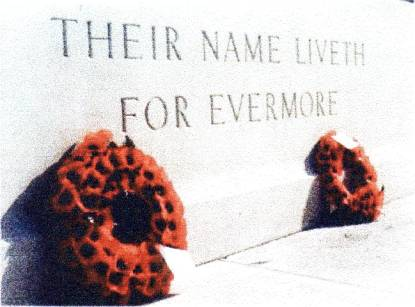
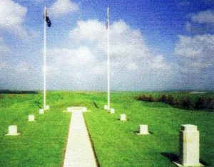
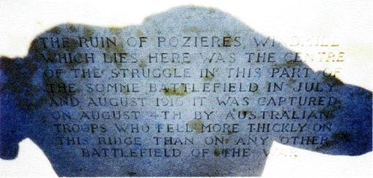
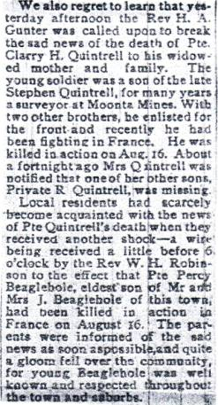
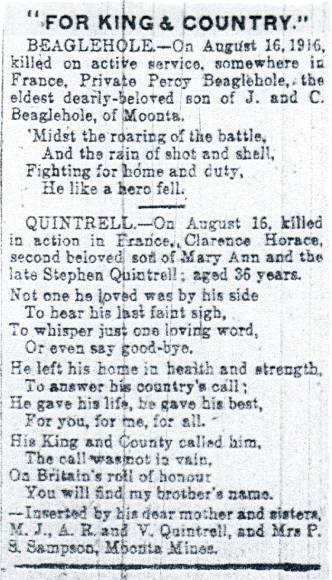
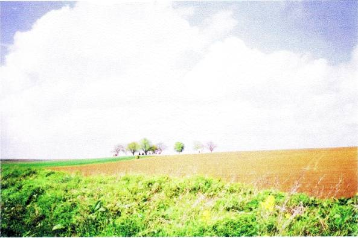
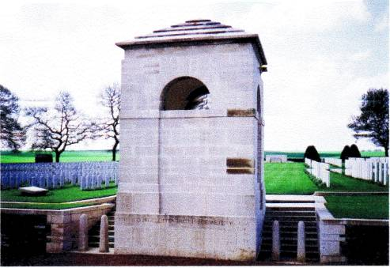
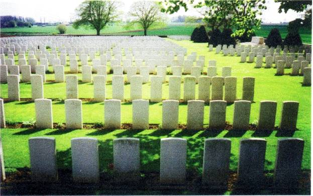
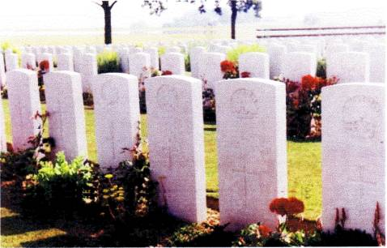
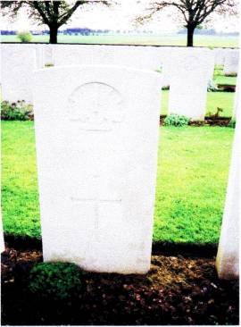

In memory of
Private
CLARENCE HORACE QUINTRELL
50th
Bn., Australian Infantry, A.I.F.
who
died aged 36 on Wednesday, 16th August 1916.
Private
QUINTRELL was the son of Stephen and Mary Ann Quintrell of Moonta
Mines, South Australia.
Remembered
with honour
COUCELETTE
BRITISH CEMETERY, Somme, France.

In the perpetual care of
The
Commonwealth War Graves Commission
CLARENCE
HORACE QUINTRELL
Clarence
Horace Quintrell was the 5th son of Stephen and Mary Ann Quintrell. He
was born on January the 28th 1879.
He was the first of the brothers to enlist when he signed up in
Adelaide on the 9th
of
October 1915. He did what his brother Richard was to do later in the
year - he understated his age. He gave his age as 35 years and 8
months - but he was in fact a year older. Before he joined the army he
worked as a labourer.
His
'description on enlistment' was
Age
35 years and 8 months
Height
5 feet 4 1/2 inches
Weight
138 lbs
Chest
Measurement
33-35 inches
Complexion
Medium
Eyes
Hazel
Hair
Brown
Religious
Denomination
Methodist
Like
his brothers Clarence chose to sign the oath to serve his 'Sovereign
Lord and King'
OATH
TO BE TAKEN BY PERSON
BEING
ENLISTED*.
I,
Clarence Horace Quintrell swear that I will well and truly
serve our Sovereign Lord the King in the Australian Imperial Force
from 9.10.15 until the end of the War, and a further period of
four months thereafter unless sooner lawfully discharged, dismissed or
removed therefrom; and that I will resist His Majesty’s enemies and
cause His Majesty’s peace to be kept and maintained; and that I will
in all matters pertaining to my service, faithfully discharge my
duties according to law.
SO
HELP ME GOD.
[signed]
C.H. Quintrell
Taken
and subscribed at ………….
In
the State of South
Australia on this
9th
day of October 1915, before me
[signature
of attesting officer]
*A
person enlisting who objects to taking an oath may make an affirmation
in accordance with the Third schedule of the Act and the above form
must be amended accordingly. All amendments must be initialed by the
Attesting Officer.
Clarence
Quintrell's career in the A. I. F. lasted only 10 months. The records
of the beginning and end of his time as a soldier are confused.
For
some unknown reason when he enlisted he filled in two 'Attestation
Paper of Persons Enlisted for Service Abroad' forms. On one form his
appointment was to C Coy, 2nd Depot Battalion, on the other the Light
Horse. He even had 3 different numbers allotted – 3886, 8293 and
8296. Eventually the authorities settled on the first number. There
are further discrepancies an official forms but it appears most likely
that he remained with the Light Horse for only a few days - from
9-10-15 until 15-10-15. He then had a short time with C Coy, 2nd Depot
Battalion from 16-10-15 until 31-10 -15. From 1-11-15 he was a member
of the 1st Depot Battalion.
It
appears that he was in the 7th Training Battalion when he
left Adelaide on H.M.A.T.
Miltiades
on the 2nd of February 1916. On
April the 2nd 1916 he was 'allotted and proceeded to join' the 50th
Battalion (formerly the 27th Battalion) at Heliopolis near Cairo in
Egypt. His records show that on the same day he was 'taken on
strength' with the 50th Battalion at Serapeum.
He
'proceeded to join' the B.E.F. from Alexandria on the transport
'Arcadia' on June the 5th 1916. A week later after the
journey across the Mediterranean Sea he disembarked at Marseilles. As
a member of the 50th Battalion, which was a South
Australian battalion, he was now part of the 13"' Brigade of the
4th Division of the A.I.F.
The
great Somme offensive began on July the 1st 1916 but the
Australian involvement did not begin until July the 23rd. Eventually
the Australian 1st, 2nd and 4th Divisions took part in the fighting
around Pozieres, and they were to suffer horrendous casualties. In 6
weeks of fighting these divisions had casualties of more than 23,000
officers and men. Approximately 8,000 Australians died. Little wonder
then that Australians are still held in high regard in this part of
France or that a container of soil was taken from here to the
Australian National War Memorial in Canberra.
At
12.28 a.m. On July the 231 1916 the 1st Division attacked
German positions near Pozieres. By July the 27th they had been
replaced by the 2"d Division but in that short time 5,285
casualties had been suffered. In the next 10 days of fighting the 2nd
Division was to lose 6,848 of its number. Their successes included the
capture of the Pozieres windmill.
It
was not until August the 6th that the 4tth Division entered the battle
with orders to proceed north along the Pozieres ridge and capture
Mouquet Farm. Mouquet Farm {also known as Mucky Farm or Moo Cow Farm
by those who fought there} was of considerable strategic importance
but proved to be a German stronghold. In the optimism of the beginning
of the Somme offensive on July the 1st the British soldiers were told
that the field kitchens would bring them their lunch at the farm which
was about one mile behind the German lines. In fact, on that day, only
a few men even reached the German barbed wire and there were 1,987
British killed or wounded. Despite many attacks it was not until the
26th of September that the farm was eventually captured by the
Canadians.
The
Australian 4th
division
continued its attacks on the farm until August the 21st
when
it was relieved by the 1st
Division.
During its attacks on the farm the 4th
Division
suffered 4,649
casualties.
One of these was Private Clarence Quintrell who was killed and buried
there on August the 16th.
He
died less than a month after his brother Richard Hugh was died in the
debacle of Fromelles.

The Australian memorial at the site of the famous Pozieres windmill[3]

The inscription on the
windmill memorial tells us that the Australians "fell more
thickly on this ridge than on any other battle field of the war"
The
rebuilt Mouquet Farm buildings are in the background. In the
foreground is the A.I.F. Memorial
WITH
THE AUSTRALIANS
Mr
Phillip Gibbs wrote on Tuesday last: - the Australians gained little
more ground by pushing out their line to the north-east of Mouquet
Farm. The enemy counter-attacks broke down under our fire with great
bloodshed. The position gained gave a vantage point from whence to
observe enemy movements down the slope, and it also gives direct
observation for gunfire. One of the immediate effects of occupying the
Pozieres ridge was seen on Wednesday, when our artillery registered
twenty-five direct hits on the enemy batteries. Our gunners are
punishing the enemy frightfully. The ground above Thiepval,
Courcelette, and Martin Puich, and the barren ground to the right, is
swept by our gunfire.
Reading
this short article in 'The Moonta Peoples Weekly'
of August the 26th 1916
one
would get the impression that things were going well for the
Australians. This impression would certainly have changed on September
the 15th
when
the local ministers brought sad news to two well known families. The
following day the following news item appeared in the local paper.

A
week later the families inserted the notices below significantly under
the heading " FOR KING & COUNTRY "

On
January the 15th 1917 Clarrie's widowed mother was advised
that she would be granted a pension of £2 fortnightly from the date
of the death of her unmarried son.
In
April of 1918 Mary Ann was advised that she was being sent "one
package containing personal effects of the late No 3886 Private C. H.
Quintrell 50th
Battalion
received ex 'Barambah' " These personal effects apparently
consisted of a Gospel for which she had to return a receipt to 'The
Officer in Charge, Base Records' in Melbourne!
In
accordance with the policy of the War Graves Commission of searching
for battlefield graves and re-interring the remains in a cemetery the
body of Clarence Quintrell was eventually found and identified. A
letter
dated 6th
of
November 1919 reveals that his body was at first wrongly identified.
Tel.
No. City 1740 Ext
Telegraphic
address:
“CROTON,
ESTRAND, LONDON”
COMMONWEALTH
OF AUSTRALIA.
AWP/KS
|
Any
further correspondence should be addressed to
OFFICER
IN CHARGE,
ASUTRALIAN
GRAVES SERVICES,
And
the following number quoted:
A.G.S.
74/M
|
COMMONWEALTH
OFFICES
AUSTRALIA
HOUSE,
STRAND,
LONDON
W.C.2
|
6th
November, 1919.
Officer
i/c Base Records,
Department
of Defence
MELBOURNE.
Reference location sheet 18300G. forwarded to you which shows
the following entry marked no trace.
“C.Coy. 69/Bn. 13 Bde.
4/A.I.F. Div. (Egypt) 3886 Dumbret Pte. C.H.
Buried N.W. of Peronne 4 Miles N.E. of Albert.”
This soldier has now been traced as:
“3886
Pte Quintrell C.H. 50th Bn., K. in A. 16.8.16.”
Kindly advise next-of-kin.
[signed]
Captain.
Australian
Graves Services.
[stamped]
DECEASED
SECTION
DEC
30 1919
RECEIVED.
In
January 1920 Mary Ann Quintrell was advised that the remains of her
son which were buried North West of Peronne, 4 miles North East of
Albert were to be exhumed and reinterred in the nearest military
cemetery. In July she received this confirmation.
2nd
July 1920
Madam,
Your
son, the late No. 3886, Private C. H. Quintrell, 50th Battalion.
His
remains have been exhumed and re-interred in the Courcelette British
Cemetery, five miles east of Albert.
This
work is carried out with every measure of care and reverence in the
presence of a Chaplain.
Mrs.
M. A. Quintrell
Moonta
Mines, S.A.

Looking
across these peaceful farming lands with the Courcelette British
Cemetery in the trees in the centre of the photo it is hard to imagine
the slaughter that took place here in the Battles of the Somme
The
Courcelette British Cemetery on a hill overlooking the village is
reached by a quiet country lane. Of the 1,956 men buried there 1,177
are unidentified. There are at least 514 Australians who during July
and August 1916 fought and died around Pozieres and Mouquet Farm which
is just a mile away across the fields to the South West.

The entrance to the
Courcelette British Cemetery

A
view of the Courcelette British Cemetery looking towards the village
in the distant background

Pte.
C.H. Quintrell now lies at rest in Grave 18, Row B, Plot 7 in this
immaculately kept cemetery. There is an English rose planted in the
flower bed near his head stone so that each day the shadow of the rose
falls across his grave - as happens with the graves in many of the
British cemeteries.

In summer the
roses are in full bloom
The
headstone on the grave of Clarence Quintrell. His mother chose the
words LOVINGLY REMEMBERED for the inscription below the cross.